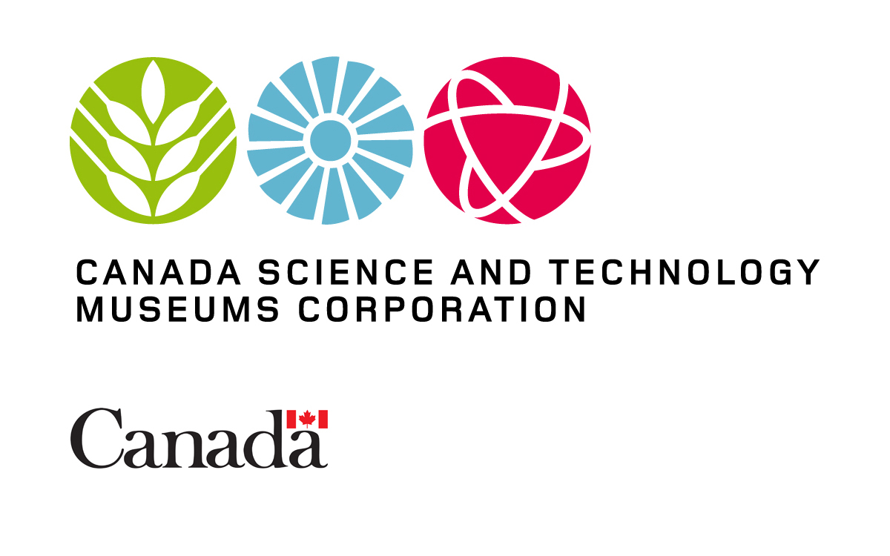
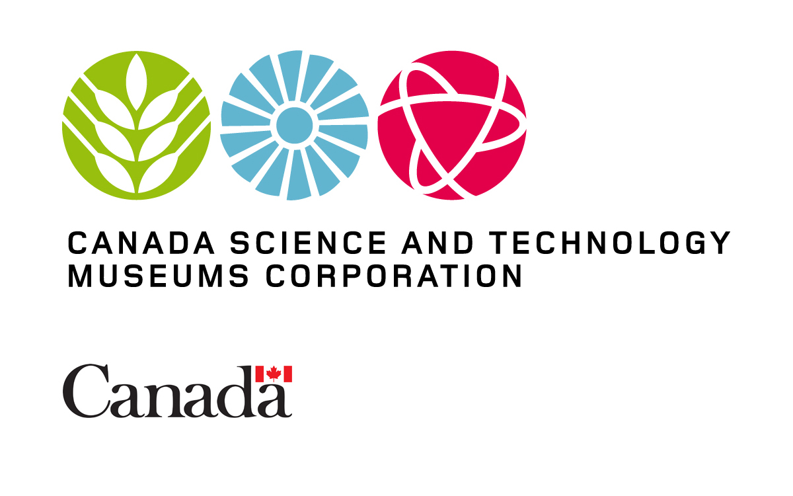

Ommic 2016


The 2016 Ontario Makers and Mentors Conference was themed “Building Ideas”. The innovation that fuels our makers and mentors comes from an idea. In the 2016 conference we built these ideas and foster innovation. Hopefully, everyone who left this year’s conference was inspired to go back into their schools and communities and bring their imagination to life, start their own makerspaces and use new technology to bring their ideas to life.
Our committee gathered speakers; planned workshops, sessions and demonstrations that provide makers with resources and the latest of new technology and to help teachers learn about tinkering and how to incorporate it into the classroom. Held in the nation's’ capital, the 2016 conference brought together our maker and mentor communities in a way that was never done before.
2016's topics
| Maker stream | Mentor stream | Skill building workshop |
|---|---|---|
Waller street Brewery
Jeremy Scott |
Building a makerspace
Olivia Eddy |
Arduino & Wearables Workshop
Justine Boudreau |
Coding Bootcamp
Tiffany Tse |
Tour the uottawa makerspace |
Teaching Tinkercad: 3D design workshop for beginners
Justine Boudreau |
Tech in the arts
|
Keynote: MD to 3D - 3D printing and tech in the health sciences
Frank Rybicki |
3D Printing in the Makerspace
Mathieu Tousignant |
Making in the era of Mixed Reality
Jeff Ross |
Tech Panel of Educators
|
|
Project Ideation session
Hanan Anis |
Empowering women in tech
|
|
Maker to Entrepreneur: Product Development
Frank Bouchard |
From STEM to STEAM- Adding the arts
Britta Evans-Fenton |
|
Innovation in VR
Jonathan Gagne |
Empowering Vulnerable Groups with Tech
Danielle Taillon |
|
"Invention" problem solving techniques
Jason Cobill |
Sponsors from 2016
 


Contact Us
Mailing Address |
Sponsorship Inquiries |
General Inquiries |
Faculty of Engineering Deans Office Attn: OMMIC Organizing Committee 161 Louis Pasture Private Ottawa, Ontario, K1N 6N5 |
Justine Boudreau Director of Finance finance@ommic.ca |
Zaineb Al-Faesly Director of Operations info@ommic.ca |